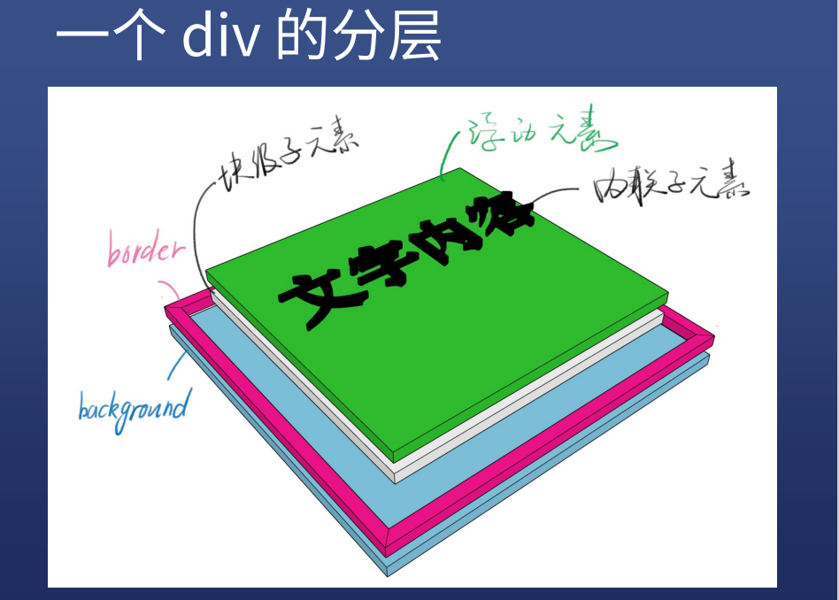
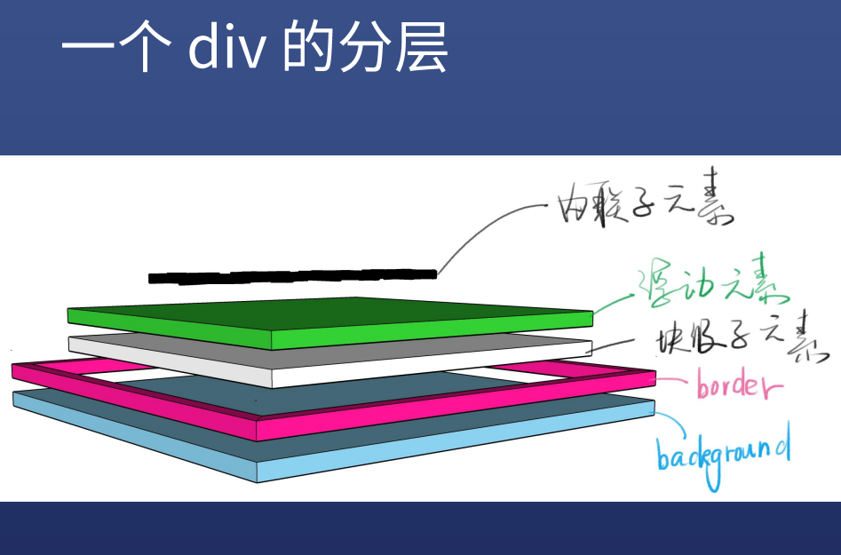

CSS定位
CSS定位
- 布局和定位的区别：布局是屏幕平面上的，定位是垂直于屏幕的
- 问题一：背景的范围是从哪到哪？（border 外边沿围成的区域）–验证方式:border半透明试试
- 问题二：从左边看一个div,是什么样子？（一个div 的分层）


新属性–position
- position的取值
- static默认值，待在文档流里
- relative 相对定位，升起来，但是不脱离文档流：
- absolute 绝对定位，定位基准是祖先里的第一个非static
- fixed 固定定位，定位基准是 viewport视窗（有bug）
- sticky 粘滞定位
1
2
3
4
5
6
7
8.demo {
position:sticky;
position: -web-sticky;
top:0;
border: 1px solid green;
background: green;
/* 可以做 粘滞导航栏 兼容性比较差 */
}
【经验】
- 如果写了 absolute,一般都得补一个 relative(子绝父相)
- 如果写了 absolute 或 fixed,一定要补 top 和 left
- sticky 兼容性很差
position：relative
- 使用场景
- 用于做位移（很少用）
- 用于给absolute 元素做爸爸
- 配合 Z-index
- z-index:auto 默认值(auto是默认值，计算出的结果是0，但是和z-index:0 是不一样的)不创建新的层叠上下文
- z-index:0/1/2
- z-index: -1/-2
- 不要写z-index:999(trash)
- 学会管理z-index
position: absolute
- 使用场景
- 脱离原来的位置，另起一层，比如对话框的关闭按钮
- 鼠标提示
配合 z-index
经验
- absolute是相对于祖先元素中最近的一个定位元素定位的(除去默认值static的元素)
- 某些浏览器上如果不写 top / left 会位置错乱
- 善用 left:100%
- 善用 left:50%；加 负margin（或者 transform）
1 | <!-- 对话框的关闭按钮 --> |
1 | <!-- 鼠标提示内容 --> |
position: fixed
- 使用场景
- 烦人的广告
- 回到顶部的按钮
配合z-index
经验
- 手机上尽量不要用这个属性，坑很多
1 | <!-- 回到顶部的按钮 --> |
All articles in this blog are licensed under CC BY-NC-SA 4.0 unless stating additionally.